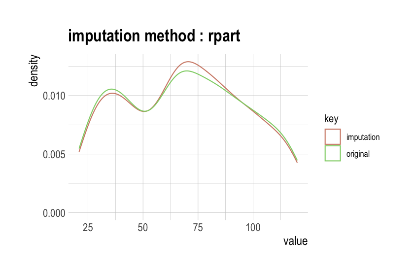
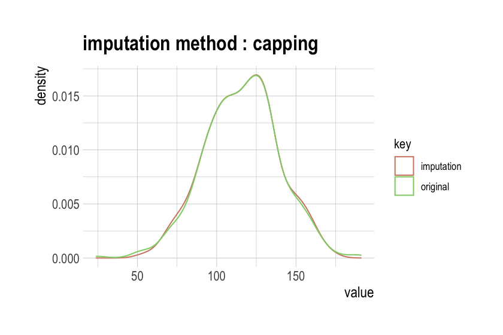
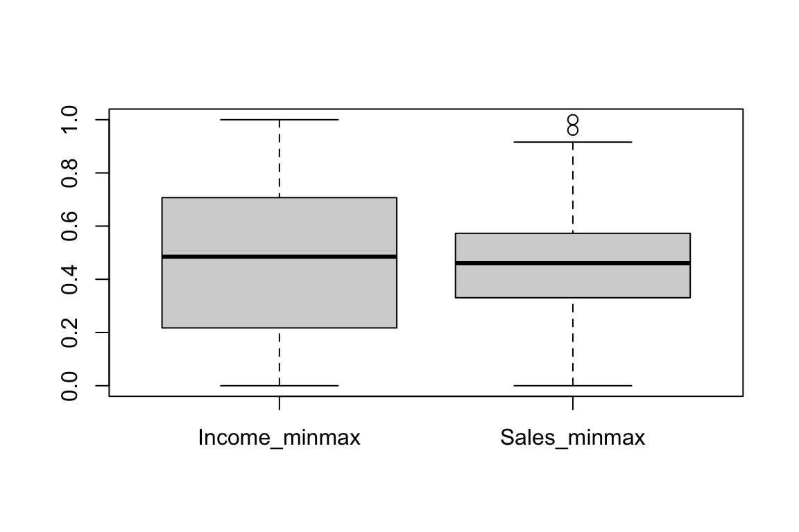
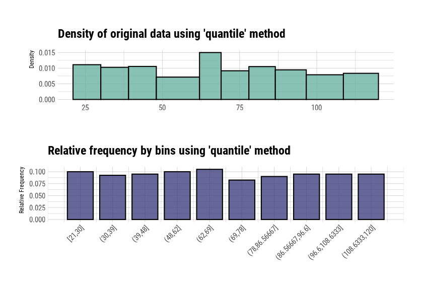
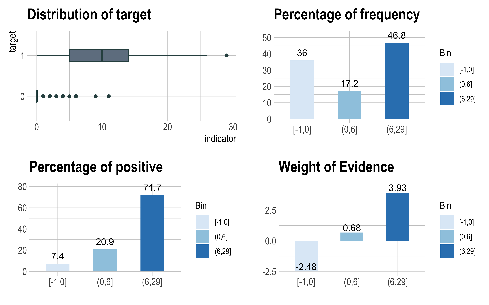

Data Transformation
Choonghyun Ryu
2024-06-09
Source:vignettes/transformation.Rmd
transformation.RmdPreface
After you have acquired the data, you should do the following:
- Diagnose data quality.
- If there is a problem with data quality,
- The data must be corrected or re-acquired.
- Explore data to understand the data and find scenarios for performing the analysis.
- Derive new variables or perform variable transformations.
The dlookr package makes these steps fast and easy:
- Performs a data diagnosis or automatically generates a data diagnosis report.
- Discover data in various ways and automatically generate EDA(exploratory data analysis) reports.
- Impute missing values and outliers, resolve skewed data, and categorize continuous variables into categorical variables. And generates an automated report to support it.
This document introduces data transformation methods
provided by the dlookr package. You will learn how to transform
tbl_df data that inherits from data.frame and
data.frame with functions provided by dlookr
dlookr increases synergy with dplyr. Particularly in
data transformation and data wrangle, it increases the efficiency of the
tidyverse package group.
datasets
To illustrate the primary use of data transformation in the dlookr
package, I use a Carseats dataset. Carseats in
the ISLR package is simulation dataset that sells
children’s car seats at 400 stores. This data is a data.frame created
for the purpose of predicting sales volume.
str(Carseats)
'data.frame': 400 obs. of 11 variables:
$ Sales : num 9.5 11.22 10.06 7.4 4.15 ...
$ CompPrice : num 138 111 113 117 141 124 115 136 132 132 ...
$ Income : num 73 48 35 100 64 113 105 81 110 113 ...
$ Advertising: num 11 16 10 4 3 13 0 15 0 0 ...
$ Population : num 276 260 269 466 340 501 45 425 108 131 ...
$ Price : num 120 83 80 97 128 72 108 120 124 124 ...
$ ShelveLoc : Factor w/ 3 levels "Bad","Good","Medium": 1 2 3 3 1 1 3 2 3 3 ...
$ Age : num 42 65 59 55 38 78 71 67 76 76 ...
$ Education : num 17 10 12 14 13 16 15 10 10 17 ...
$ Urban : Factor w/ 2 levels "No","Yes": 2 2 2 2 2 1 2 2 1 1 ...
$ US : Factor w/ 2 levels "No","Yes": 2 2 2 2 1 2 1 2 1 2 ...The contents of individual variables are as follows. (Refer to ISLR::Carseats Man page)
- Sales
- Unit sales (in thousands) at each location
- CompPrice
- Price charged by a competitor at each location
- Income
- Community income level (in thousands of dollars)
- Advertising
- Local advertising budget for company at each location (in thousands of dollars)
- Population
- Population size in region (in thousands)
- Price
- Price company charges for car seats at each site
- ShelveLoc
- A factor with levels Bad, Good and Medium indicating the quality of the shelving location for the car seats at each site
- Age
- Average age of the local population
- Education
- Education level at each location
- Urban
- A factor with levels No and Yes to indicate whether the store is in an urban or rural location
- US
- A factor with levels No and Yes to indicate whether the store is in the US or not
When data analysis is performed, data containing missing values is
often encountered. However, Carseats is complete data
without missing. Therefore, the missing values are generated as follows.
And I created a data.frame object named carseat.
carseats <- Carseats
suppressWarnings(RNGversion("3.5.0"))
set.seed(123)
carseats[sample(seq(NROW(carseats)), 20), "Income"] <- NA
suppressWarnings(RNGversion("3.5.0"))
set.seed(456)
carseats[sample(seq(NROW(carseats)), 10), "Urban"] <- NAData Transformation
dlookr imputes missing values and outliers and resolves skewed data. It also provides the ability to bin continuous variables as categorical variables.
Here is a list of the data conversion functions and functions provided by dlookr:
-
find_na()finds a variable that contains the missing values variable, andimputate_na()imputes the missing values. -
find_outliers()finds a variable that contains the outliers, andimputate_outlier()imputes the outlier. -
summary.imputation()andplot.imputation()provide information and visualization of the imputed variables. -
find_skewness()finds the variables of the skewed data, andtransform()resolves the skewed data. -
transform()also performs standardization of numeric variables. -
summary.transform()andplot.transform()provide information and visualization of transformed variables. -
binning()andbinning_by()convert binational data into categorical data. -
print.bins()andsummary.bins()show and summarize the binning results. -
plot.bins()andplot.optimal_bins()provide visualization of the binning result. -
transformation_report()performs the data transform and reports the result.
Imputation of missing values
imputes the missing value with imputate_na()
imputate_na() imputes the missing value contained in the
variable. The predictor with missing values supports numeric and
categorical variables and the following method.
- predictor is numerical variable
- “mean”: arithmetic mean
- “median”: median
- “mode”: mode
- “knn”: K-nearest neighbors
- target variable must be specified
- “rpart”: Recursive Partitioning and Regression Trees
- target variable must be specified
- target variable must be specified
- “mice”: Multivariate Imputation by Chained Equations
- target variable must be specified
- random seed must be set
- target variable must be specified
- predictor is categorical variable
- “mode”: mode
- “rpart”: Recursive Partitioning and Regression Trees
- target variable must be specified
- target variable must be specified
- “mice”: Multivariate Imputation by Chained Equations
- target variable must be specified
- random seed must be set
- target variable must be specified
In the following example, imputate_na() imputes the
missing value of Income, a numeric variable of carseats,
using the “rpart” method. summary() summarizes missing
value imputation information, and plot() visualizes missing
information.
if (requireNamespace("rpart", quietly = TRUE)) {
income <- imputate_na(carseats, Income, US, method = "rpart")
# result of imputation
income
# summary of imputation
summary(income)
# viz of imputation
plot(income)
} else {
cat("If you want to use this feature, you need to install the rpart package.\n")
}
* Impute missing values based on Recursive Partitioning and Regression Trees
- method : rpart
* Information of Imputation (before vs after)
Original Imputation
described_variables "value" "value"
n "380" "400"
na "20" " 0"
mean "68.86053" "69.05073"
sd "28.09161" "27.57382"
se_mean "1.441069" "1.378691"
IQR "48.25" "46.00"
skewness "0.04490600" "0.02935732"
kurtosis "-1.089201" "-1.035086"
p00 "21" "21"
p01 "21.79" "21.99"
p05 "26" "26"
p10 "30.0" "30.9"
p20 "39" "40"
p25 "42.75" "44.00"
p30 "48.00000" "51.58333"
p40 "62" "63"
p50 "69" "69"
p60 "78.0" "77.4"
p70 "86.3" "84.3"
p75 "91" "90"
p80 "96.2" "96.0"
p90 "108.1" "106.1"
p95 "115.05" "115.00"
p99 "119.21" "119.01"
p100 "120" "120" 
The following imputes the categorical variable urban by
the “mice” method.
The “mice” method must require the mice,
ranger package. If you want to use this feature, you need
to install the mice, and ranger package.
library(mice)
urban <- imputate_na(carseats, Urban, US, method = "mice")
# result of imputation
urban
# summary of imputation
summary(urban)
# viz of imputation
plot(urban)Collaboration with dplyr
The following example imputes the missing value of the
Income variable and then calculates the arithmetic mean for
each level of US. In this case, dplyr is used
and is easily interpreted logically using pipes.
# The mean before and after the imputation of the Income variable
carseats %>%
mutate(Income_imp = imputate_na(carseats, Income, US, method = "knn")) %>%
group_by(US) %>%
summarise(orig = mean(Income, na.rm = TRUE),
imputation = mean(Income_imp))
[38;5;246m# A tibble: 2 × 3
[39m
US orig imputation
[3m
[38;5;246m<fct>
[39m
[23m
[3m
[38;5;246m<dbl>
[39m
[23m
[3m
[38;5;246m<dbl>
[39m
[23m
[38;5;250m1
[39m No 65.8 66.1
[38;5;250m2
[39m Yes 70.4 70.5Impute outliers
imputes the outliers with imputate_outlier()
imputate_outlier() imputes the outlier value. The
predictor with outliers supports only numeric variables and supports the
following methods.
- predictor is numerical variable
- “mean”: arithmetic mean
- “median”: median
- “mode”: mode
- “capping”: Impute the upper outliers with the 95 percentile and the bottom outliers with the fifth percentile.
imputate_outlier() imputes the outliers with the numeric
variable Price as the “capping” method, as follows.
summary() summarizes outliers imputation information, and
plot() visualizes imputation information.
price <- imputate_outlier(carseats, Price, method = "capping")
# result of imputation
price
[1] 120.00 83.00 80.00 97.00 128.00 72.00 108.00 120.00 124.00 124.00
[11] 100.00 94.00 136.00 86.00 118.00 144.00 110.00 131.00 68.00 121.00
[21] 131.00 109.00 138.00 109.00 113.00 82.00 131.00 107.00 97.00 102.00
[31] 89.00 131.00 137.00 128.00 128.00 96.00 100.00 110.00 102.00 138.00
[41] 126.00 124.00 77.00 134.00 95.00 135.00 70.00 108.00 98.00 149.00
[51] 108.00 108.00 129.00 119.00 144.00 154.00 84.00 117.00 103.00 114.00
[61] 123.00 107.00 133.00 101.00 104.00 128.00 91.00 115.00 134.00 99.00
[71] 99.00 150.00 116.00 104.00 136.00 92.00 70.00 89.00 145.00 90.00
[81] 79.00 128.00 139.00 94.00 121.00 112.00 134.00 126.00 111.00 119.00
[91] 103.00 107.00 125.00 104.00 84.00 148.00 132.00 129.00 127.00 107.00
[101] 106.00 118.00 97.00 96.00 138.00 97.00 139.00 108.00 103.00 90.00
[111] 116.00 151.00 125.00 127.00 106.00 129.00 128.00 119.00 99.00 128.00
[121] 131.00 87.00 108.00 155.00 120.00 77.00 133.00 116.00 126.00 147.00
[131] 77.00 94.00 136.00 97.00 131.00 120.00 120.00 118.00 109.00 94.00
[141] 129.00 131.00 104.00 159.00 123.00 117.00 131.00 119.00 97.00 87.00
[151] 114.00 103.00 128.00 150.00 110.00 69.00 157.00 90.00 112.00 70.00
[161] 111.00 160.00 149.00 106.00 141.00 155.05 137.00 93.00 117.00 77.00
[171] 118.00 55.00 110.00 128.00 155.05 122.00 154.00 94.00 81.00 116.00
[181] 149.00 91.00 140.00 102.00 97.00 107.00 86.00 96.00 90.00 104.00
[191] 101.00 173.00 93.00 96.00 128.00 112.00 133.00 138.00 128.00 126.00
[201] 146.00 134.00 130.00 157.00 124.00 132.00 160.00 97.00 64.00 90.00
[211] 123.00 120.00 105.00 139.00 107.00 144.00 144.00 111.00 120.00 116.00
[221] 124.00 107.00 145.00 125.00 141.00 82.00 122.00 101.00 163.00 72.00
[231] 114.00 122.00 105.00 120.00 129.00 132.00 108.00 135.00 133.00 118.00
[241] 121.00 94.00 135.00 110.00 100.00 88.00 90.00 151.00 101.00 117.00
[251] 156.00 132.00 117.00 122.00 129.00 81.00 144.00 112.00 81.00 100.00
[261] 101.00 118.00 132.00 115.00 159.00 129.00 112.00 112.00 105.00 166.00
[271] 89.00 110.00 63.00 86.00 119.00 132.00 130.00 125.00 151.00 158.00
[281] 145.00 105.00 154.00 117.00 96.00 131.00 113.00 72.00 97.00 156.00
[291] 103.00 89.00 74.00 89.00 99.00 137.00 123.00 104.00 130.00 96.00
[301] 99.00 87.00 110.00 99.00 134.00 132.00 133.00 120.00 126.00 80.00
[311] 166.00 132.00 135.00 54.00 129.00 171.00 72.00 136.00 130.00 129.00
[321] 152.00 98.00 139.00 103.00 150.00 104.00 122.00 104.00 111.00 89.00
[331] 112.00 134.00 104.00 147.00 83.00 110.00 143.00 102.00 101.00 126.00
[341] 91.00 93.00 118.00 121.00 126.00 149.00 125.00 112.00 107.00 96.00
[351] 91.00 105.00 122.00 92.00 145.00 146.00 164.00 72.00 118.00 130.00
[361] 114.00 104.00 110.00 108.00 131.00 162.00 134.00 77.00 79.00 122.00
[371] 119.00 126.00 98.00 116.00 118.00 124.00 92.00 125.00 119.00 107.00
[381] 89.00 151.00 121.00 68.00 112.00 132.00 160.00 115.00 78.00 107.00
[391] 111.00 124.00 130.00 120.00 139.00 128.00 120.00 159.00 95.00 120.00
attr(,"method")
[1] "capping"
attr(,"var_type")
[1] "numerical"
attr(,"outlier_pos")
[1] 43 126 166 175 368
attr(,"outliers")
[1] 24 49 191 185 53
attr(,"type")
[1] "outliers"
attr(,"message")
[1] "complete imputation"
attr(,"success")
[1] TRUE
attr(,"class")
[1] "imputation" "numeric"
# summary of imputation
summary(price)
Impute outliers with capping
* Information of Imputation (before vs after)
Original Imputation
described_variables "value" "value"
n "400" "400"
na "0" "0"
mean "115.7950" "115.8927"
sd "23.67666" "22.61092"
se_mean "1.183833" "1.130546"
IQR "31" "31"
skewness "-0.1252862" "-0.0461621"
kurtosis " 0.4518850" "-0.3030578"
p00 "24" "54"
p01 "54.99" "67.96"
p05 "77" "77"
p10 "87" "87"
p20 "96.8" "96.8"
p25 "100" "100"
p30 "104" "104"
p40 "110" "110"
p50 "117" "117"
p60 "122" "122"
p70 "128.3" "128.3"
p75 "131" "131"
p80 "134" "134"
p90 "146" "146"
p95 "155.0500" "155.0025"
p99 "166.05" "164.02"
p100 "191" "173"
# viz of imputation
plot(price)
Collaboration with dplyr
The following example imputes the outliers of the Price
variable and then calculates the arithmetic mean for each level of
US. In this case, dplyr is used and is easily
interpreted logically using pipes.
# The mean before and after the imputation of the Price variable
carseats %>%
mutate(Price_imp = imputate_outlier(carseats, Price, method = "capping")) %>%
group_by(US) %>%
summarise(orig = mean(Price, na.rm = TRUE),
imputation = mean(Price_imp, na.rm = TRUE))
[38;5;246m# A tibble: 2 × 3
[39m
US orig imputation
[3m
[38;5;246m<fct>
[39m
[23m
[3m
[38;5;246m<dbl>
[39m
[23m
[3m
[38;5;246m<dbl>
[39m
[23m
[38;5;250m1
[39m No 114. 114.
[38;5;250m2
[39m Yes 117. 117.Standardization and Resolving Skewness
Introduction to the use of transform()
transform() performs data transformation. Only numeric
variables are supported, and the following methods are provided.
- Standardization
- “zscore”: z-score transformation. (x - mu) / sigma
- “minmax”: minmax transformation. (x - min) / (max - min)
- Resolving Skewness
- “log”: log transformation. log(x)
- “log+1”: log transformation. log(x + 1). Used for values that contain 0.
- “sqrt”: square root transformation.
- “1/x”: 1 / x transformation
- “x^2”: x square transformation
- “x^3”: x^3 square transformation
Standardization with transform()
Use the methods “zscore” and “minmax” to perform standardization.
carseats %>%
mutate(Income_minmax = transform(carseats$Income, method = "minmax"),
Sales_minmax = transform(carseats$Sales, method = "minmax")) %>%
select(Income_minmax, Sales_minmax) %>%
boxplot()
Resolving Skewness data with transform()
find_skewness() searches for variables with skewed data.
This function finds data skewed by search conditions and calculates
skewness.
# find index of skewed variables
find_skewness(carseats)
[1] 4
# find names of skewed variables
find_skewness(carseats, index = FALSE)
[1] "Advertising"
# compute the skewness
find_skewness(carseats, value = TRUE)
Sales CompPrice Income Advertising Population Price
0.185 -0.043 0.045 0.637 -0.051 -0.125
Age Education
-0.077 0.044
# compute the skewness & filtering with threshold
find_skewness(carseats, value = TRUE, thres = 0.1)
Sales Advertising Price
0.185 0.637 -0.125 The skewness of Advertising is 0.637. This means that
the distribution of data is somewhat inclined to the left. So, for
normal distribution, use transform() to convert to the
“log” method as follows. summary() summarizes
transformation information, and plot() visualizes
transformation information.
Advertising_log <- transform(carseats$Advertising, method = "log")
# result of transformation
head(Advertising_log)
[1] 2.397895 2.772589 2.302585 1.386294 1.098612 2.564949
# summary of transformation
summary(Advertising_log)
* Resolving Skewness with log
* Information of Transformation (before vs after)
Original Transformation
n 400.0000000 400.0000000
na 0.0000000 0.0000000
mean 6.6350000 -Inf
sd 6.6503642 NaN
se_mean 0.3325182 NaN
IQR 12.0000000 Inf
skewness 0.6395858 NaN
kurtosis -0.5451178 NaN
p00 0.0000000 -Inf
p01 0.0000000 -Inf
p05 0.0000000 -Inf
p10 0.0000000 -Inf
p20 0.0000000 -Inf
p25 0.0000000 -Inf
p30 0.0000000 -Inf
p40 2.0000000 0.6931472
p50 5.0000000 1.6094379
p60 8.4000000 2.1265548
p70 11.0000000 2.3978953
p75 12.0000000 2.4849066
p80 13.0000000 2.5649494
p90 16.0000000 2.7725887
p95 19.0000000 2.9444390
p99 23.0100000 3.1359198
p100 29.0000000 3.3672958
# viz of transformation
plot(Advertising_log)
The raw data seems to contain 0, as there is a -Inf in the log converted value. So this time, convert it to “log+1”.
Advertising_log <- transform(carseats$Advertising, method = "log+1")
# result of transformation
head(Advertising_log)
[1] 2.484907 2.833213 2.397895 1.609438 1.386294 2.639057
# summary of transformation
summary(Advertising_log)
* Resolving Skewness with log+1
* Information of Transformation (before vs after)
Original Transformation
n 400.0000000 400.00000000
na 0.0000000 0.00000000
mean 6.6350000 1.46247709
sd 6.6503642 1.19436323
se_mean 0.3325182 0.05971816
IQR 12.0000000 2.56494936
skewness 0.6395858 -0.19852549
kurtosis -0.5451178 -1.66342876
p00 0.0000000 0.00000000
p01 0.0000000 0.00000000
p05 0.0000000 0.00000000
p10 0.0000000 0.00000000
p20 0.0000000 0.00000000
p25 0.0000000 0.00000000
p30 0.0000000 0.00000000
p40 2.0000000 1.09861229
p50 5.0000000 1.79175947
p60 8.4000000 2.23936878
p70 11.0000000 2.48490665
p75 12.0000000 2.56494936
p80 13.0000000 2.63905733
p90 16.0000000 2.83321334
p95 19.0000000 2.99573227
p99 23.0100000 3.17846205
p100 29.0000000 3.40119738
# viz of transformation
# plot(Advertising_log)Binning
Binning of individual variables using binning()
binning() transforms a numeric variable into a
categorical variable by binning it. The following types of binning are
supported.
- “quantile”: categorize using quantile to include the same frequencies
- “equal”: categorize to have equal length segments
- “pretty”: categorized into moderately good segments
- “kmeans”: categorization using K-means clustering
- “bclust”: categorization using bagged clustering technique
Here are some examples of bin Income using
binning().
# Binning the carat variable. the default type argument is "quantile"
bin <- binning(carseats$Income)
# Print bins class object
bin
binned type: quantile
number of bins: 10
x
[21,30] (30,39] (39,48] (48,62] (62,69]
40 37 38 40 42
(69,78] (78,86.56667] (86.56667,96.6] (96.6,108.6333] (108.6333,120]
33 36 38 38 38
<NA>
20
# Summarize bins class object
summary(bin)
levels freq rate
1 [21,30] 40 0.1000
2 (30,39] 37 0.0925
3 (39,48] 38 0.0950
4 (48,62] 40 0.1000
5 (62,69] 42 0.1050
6 (69,78] 33 0.0825
7 (78,86.56667] 36 0.0900
8 (86.56667,96.6] 38 0.0950
9 (96.6,108.6333] 38 0.0950
10 (108.6333,120] 38 0.0950
11 <NA> 20 0.0500
# Plot bins class object
plot(bin)
# Using labels argument
bin <- binning(carseats$Income, nbins = 4,
labels = c("LQ1", "UQ1", "LQ3", "UQ3"))
bin
binned type: quantile
number of bins: 4
x
LQ1 UQ1 LQ3 UQ3 <NA>
95 102 89 94 20
# Using another type argument
binning(carseats$Income, nbins = 5, type = "equal")
binned type: equal
number of bins: 5
x
[21,40.8] (40.8,60.6] (60.6,80.4] (80.4,100.2] (100.2,120] <NA>
81 65 94 80 60 20
binning(carseats$Income, nbins = 5, type = "pretty")
binned type: pretty
number of bins: 5
x
[20,40] (40,60] (60,80] (80,100] (100,120] <NA>
81 65 94 80 60 20
if (requireNamespace("classInt", quietly = TRUE)) {
binning(carseats$Income, nbins = 5, type = "kmeans")
binning(carseats$Income, nbins = 5, type = "bclust")
} else {
cat("If you want to use this feature, you need to install the classInt package.\n")
}
binned type: bclust
number of bins: 5
x
[21,49] (49,64.5] (64.5,86.5] (86.5,107.5] (107.5,120] <NA>
115 52 99 75 39 20
# Extract the binned results
extract(bin)
[1] LQ3 UQ1 LQ1 UQ3 UQ1 UQ3 UQ3 LQ3 UQ3 UQ3 LQ3 UQ3 LQ1 LQ1 UQ3
[16] UQ3 <NA> <NA> UQ3 LQ3 LQ3 LQ1 UQ1 LQ1 UQ3 LQ1 UQ3 UQ3 LQ3 UQ3
[31] UQ3 UQ1 LQ1 LQ1 UQ1 LQ3 LQ3 LQ1 LQ3 <NA> UQ3 UQ1 UQ1 LQ1 LQ3
[46] UQ1 LQ3 UQ3 UQ1 UQ3 LQ1 LQ3 LQ1 UQ1 UQ3 LQ3 LQ3 LQ3 UQ3 LQ3
[61] UQ3 LQ1 UQ1 LQ3 UQ1 LQ1 UQ3 UQ1 UQ1 UQ1 LQ3 UQ1 UQ1 LQ3 UQ1
[76] UQ3 LQ3 LQ3 UQ1 UQ1 UQ3 LQ3 LQ3 LQ1 LQ1 UQ3 LQ3 UQ1 LQ1 UQ1
[91] LQ1 UQ1 UQ3 LQ1 <NA> LQ1 LQ1 LQ3 LQ3 UQ1 UQ1 UQ3 LQ1 LQ3 UQ3
[106] UQ3 LQ1 UQ3 LQ3 UQ1 UQ1 UQ3 UQ3 LQ1 LQ3 <NA> LQ3 UQ1 LQ3 UQ3
[121] UQ3 LQ3 UQ3 UQ3 UQ3 <NA> UQ1 UQ1 UQ3 UQ3 LQ3 UQ1 LQ3 UQ3 LQ1
[136] UQ3 LQ3 LQ1 UQ3 UQ1 UQ1 LQ1 LQ3 LQ3 UQ1 UQ1 LQ3 UQ1 UQ3 UQ3
[151] LQ3 UQ1 LQ3 LQ1 UQ1 LQ3 LQ1 UQ1 LQ3 UQ1 LQ1 LQ1 <NA> UQ1 UQ1
[166] UQ1 UQ1 LQ3 LQ3 LQ1 LQ1 UQ3 UQ3 LQ3 LQ1 LQ3 <NA> LQ3 <NA> LQ1
[181] UQ3 LQ3 UQ1 LQ3 LQ1 UQ3 UQ1 LQ1 LQ1 UQ3 LQ1 LQ1 LQ1 LQ3 UQ3
[196] UQ3 LQ1 UQ1 LQ3 LQ3 UQ3 LQ3 LQ3 LQ3 LQ3 LQ1 UQ1 UQ3 <NA> LQ1
[211] LQ1 UQ3 UQ1 LQ3 UQ3 LQ3 <NA> UQ1 UQ1 LQ3 UQ3 <NA> UQ3 UQ1 LQ3
[226] LQ1 LQ1 UQ1 LQ3 UQ3 UQ1 UQ1 LQ3 LQ3 UQ1 LQ1 LQ1 LQ1 LQ1 UQ3
[241] LQ3 UQ1 UQ1 LQ1 LQ1 UQ1 UQ1 UQ3 UQ1 UQ1 UQ3 UQ3 UQ3 LQ1 UQ3
[256] LQ3 LQ1 UQ1 LQ1 LQ1 UQ3 LQ1 <NA> LQ1 LQ1 LQ1 UQ3 LQ3 UQ1 UQ1
[271] LQ1 UQ1 LQ1 UQ3 UQ3 UQ3 UQ1 UQ1 UQ3 UQ1 LQ3 UQ1 UQ3 UQ3 UQ1
[286] LQ1 UQ3 UQ1 LQ1 LQ3 UQ3 LQ3 UQ1 LQ3 LQ3 LQ1 UQ1 LQ3 UQ1 LQ1
[301] LQ3 UQ3 LQ3 UQ1 UQ3 LQ1 LQ1 UQ3 LQ3 UQ3 UQ1 UQ1 UQ3 LQ3 <NA>
[316] LQ1 LQ1 LQ1 LQ3 UQ1 LQ3 LQ1 UQ1 UQ3 UQ1 UQ1 LQ1 LQ1 UQ1 UQ1
[331] UQ1 UQ1 LQ1 UQ1 UQ3 LQ3 LQ1 LQ1 LQ1 UQ1 LQ1 UQ3 UQ3 LQ1 LQ3
[346] UQ1 <NA> LQ1 UQ3 LQ1 <NA> UQ3 UQ3 UQ1 LQ1 UQ3 UQ3 LQ3 UQ3 UQ1
[361] LQ3 LQ1 UQ1 <NA> LQ1 LQ1 UQ1 UQ3 LQ1 UQ3 LQ1 LQ3 <NA> <NA> UQ1
[376] UQ1 UQ1 UQ1 LQ3 UQ3 UQ1 UQ1 LQ1 UQ3 LQ1 LQ3 UQ3 LQ3 LQ3 LQ1
[391] LQ3 UQ1 LQ1 UQ1 UQ1 UQ3 <NA> LQ1 LQ3 LQ1
Levels: LQ1 < UQ1 < LQ3 < UQ3
# -------------------------
# Using pipes & dplyr
# -------------------------
library(dplyr)
carseats %>%
mutate(Income_bin = binning(carseats$Income) %>%
extract()) %>%
group_by(ShelveLoc, Income_bin) %>%
summarise(freq = n()) %>%
arrange(desc(freq)) %>%
head(10)
[1m
[22m`summarise()` has grouped output by 'ShelveLoc'. You can override using the
`.groups` argument.
[38;5;246m# A tibble: 10 × 3
[39m
[38;5;246m# Groups: ShelveLoc [1]
[39m
ShelveLoc Income_bin freq
[3m
[38;5;246m<fct>
[39m
[23m
[3m
[38;5;246m<ord>
[39m
[23m
[3m
[38;5;246m<int>
[39m
[23m
[38;5;250m1
[39m Medium [21,30] 25
[38;5;250m2
[39m Medium (62,69] 24
[38;5;250m3
[39m Medium (48,62] 23
[38;5;250m4
[39m Medium (39,48] 21
[38;5;246m# ℹ 6 more rows
[39mOptimal Binning with binning_by()
binning_by() transforms a numeric variable into a
categorical variable by optimal binning. This method is often used when
developing a scorecard model.
The following binning_by() example optimally binning
Advertising considering the target variable US
with a binary class.
library(dplyr)
if (requireNamespace("partykit", quietly = TRUE)) {
# optimal binning using character
bin <- binning_by(carseats, "US", "Advertising")
# optimal binning using name
bin <- binning_by(carseats, US, Advertising)
bin
# summary optimal_bins class
summary(bin)
# performance table
attr(bin, "performance")
# visualize optimal_bins class
plot(bin)
# extract binned results
extract(bin) %>%
head(20)
} else {
cat("If you want to use this feature, you need to install the partykit package.\n")
}
Warning in binning_by(carseats, "US", "Advertising"): The factor y has been changed to a numeric vector consisting of 0 and 1.
'Yes' changed to 1 (positive) and 'No' changed to 0 (negative).
Warning in binning_by(carseats, US, Advertising): The factor y has been changed to a numeric vector consisting of 0 and 1.
'Yes' changed to 1 (positive) and 'No' changed to 0 (negative).
── Binning Table ──────────────────────── Several Metrics ──
Bin CntRec CntPos CntNeg RatePos RateNeg Odds WoE IV JSD
1 [-1,0] 144 19 125 0.07364 0.88028 0.1520 -2.48101 2.00128 0.20093
2 (0,6] 69 54 15 0.20930 0.10563 3.6000 0.68380 0.07089 0.00869
3 (6,29] 187 185 2 0.71705 0.01408 92.5000 3.93008 2.76272 0.21861
4 Total 400 258 142 1.00000 1.00000 1.8169 NA 4.83489 0.42823
AUC
1 0.03241
2 0.01883
3 0.00903
4 0.06028
── General Metrics ─────────────────────────────────────────
• Gini index : -0.87944
• IV (Jeffrey) : 4.83489
• JS (Jensen-Shannon) Divergence : 0.42823
• Kolmogorov-Smirnov Statistics : 0.80664
• HHI (Herfindahl-Hirschman Index) : 0.37791
• HHI (normalized) : 0.06687
• Cramer's V : 0.81863
── Significance Tests ──────────────────── Chisquare Test ──
Bin A Bin B statistics p_value
1 [-1,0] (0,6] 87.67064 7.731349e-21
2 (0,6] (6,29] 34.73349 3.780706e-09
[1] (6,29] (6,29] (6,29] (0,6] (0,6] (6,29] [-1,0] (6,29] [-1,0] [-1,0]
[11] (6,29] (0,6] (0,6] (6,29] (6,29] (0,6] [-1,0] (6,29] [-1,0] (6,29]
Levels: [-1,0] < (0,6] < (6,29]Automated report
dlookr provides two automated data transformation reports:
- Web page-based dynamic reports can perform in-depth analysis through visualization and statistical tables.
- Static reports generated as pdf files or html files can be archived as output of data analysis.
Create a dynamic report using
transformation_web_report()
transformation_web_report() creates a dynamic report for
objects inherited from data.frame(tbl_df, tbl,
etc) or data.frame.
Contents of dynamic web report
The contents of the report are as follows.:
- Overview
- Data Structures
- Data Types
- Job Information
- Imputation
- Missing Values
- Outliers
- Resolving Skewness
- Binning
- Optimal Binning
Some arguments for dynamic web report
transformation_web_report() generates various reports with the following arguments.
- target
- target variable
- output_file
- name of the generated file.
- output_dir
- name of the directory to generate report file.
- title
- title of the report.
- subtitle
- subtitle of the report.
- author
- author of the report.
- title_color
- color of title.
- logo_img
- The name of the logo image file is on the top left.
- create_date
- The date on which the report is generated.
- theme
- name of the theme for the report. Support “orange” and “blue”.
- sample_percent
- Sample percent of data for performing data transformation.
The following script creates a data transformation report for the
tbl_df class object, heartfailure.
heartfailure %>%
transformation_web_report(target = "death_event", subtitle = "heartfailure",
output_dir = "./", output_file = "transformation.html",
theme = "blue")
Create a static report using
transformation_paged_report()
transformation_paged_report() create static report for
object inherited from data.frame(tbl_df, tbl,
etc) or data.frame.
Contents of static paged report
The contents of the report are as follows.:
- Overview
- Data Structures
- Job Information
- Imputation
- Missing Values
- Outliers
- Resolving Skewness
- Binning
- Optimal Binning
Some arguments for static paged report
transformation_paged_report() generates various reports with the following arguments.
- target
- target variable
- output_format
- report output type. Choose either “pdf” or “html”.
- output_file
- name of the generated file.
- output_dir
- name of the directory to generate the report file.
- title
- title of the report.
- subtitle
- subtitle of the report.
- abstract_title
- abstract of the report
- author
- author of the report.
- title_color
- color of title.
- subtitle_color
- color of subtitle.
- logo_img
- The name of the logo image file is on the top left.
- cover_img
- name of cover image file on center.
- create_date
- The date on which the report is generated.
- theme
- name of the theme for the report. Support “orange” and “blue”.
- sample_percent
- Sample percent of data for performing data transformation.
The following script creates a data transformation report for the
data.frame class object, heartfailure.
heartfailure %>%
transformation_paged_report(target = "death_event", subtitle = "heartfailure",
output_dir = "./", output_file = "transformation.pdf",
theme = "blue")